His components, drawn from his frames, for the two fire-geo pages. On the left of each row is the kit. On the right is the crop of his tile it was built from. How things move stays as it is on the pages today.
Five colours and leaf. Two weights of Inter. Corners 60, 48, 36, 24 and never 12. Things you touch are capsules or circles.
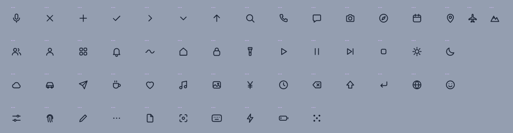
Ink asks for a decision. Light sends. Veil is everything else. Pressed is 86%. Disabled is 40%. Anything that sends is a hold.
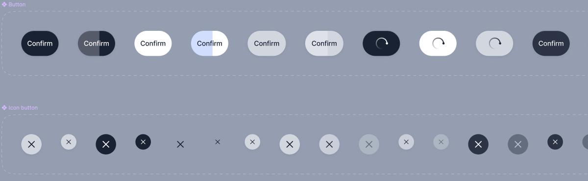
30-buttons/t-02-01, States and Loader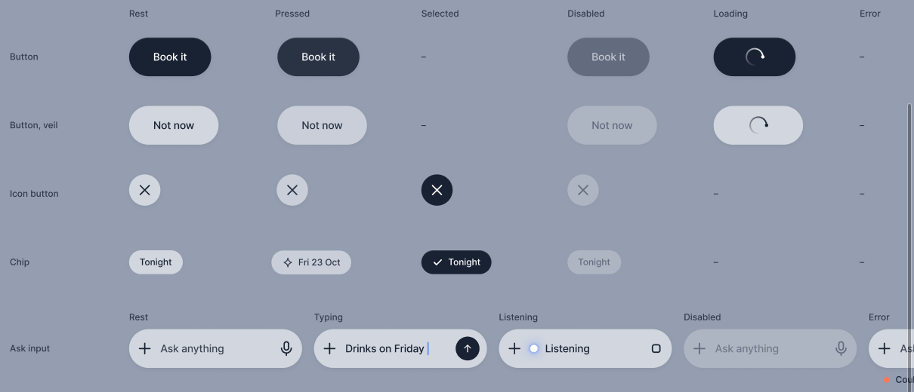
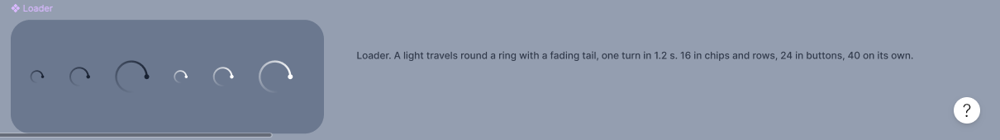
One capsule, five kinds. Chosen is ink with a check. The segmented control is the same chips on a quiet track, and its pill slides.
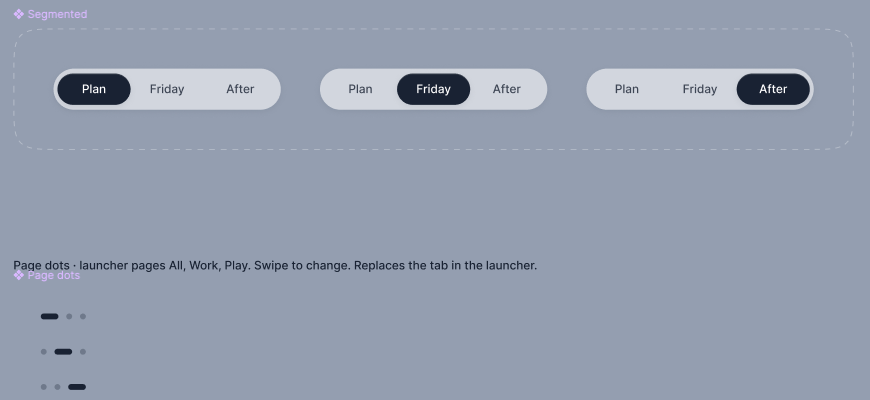
32-segmented-chips/t-01-02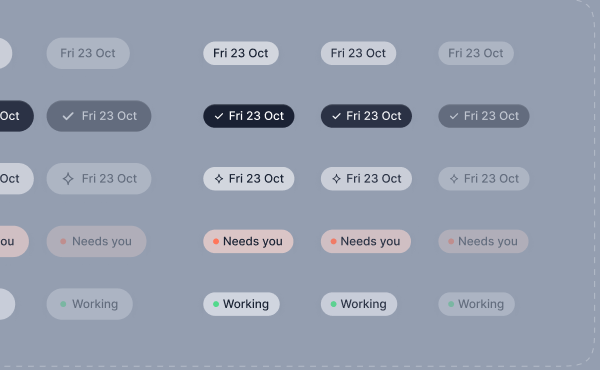
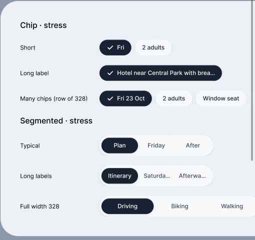
32-segmented-chips/t-02-01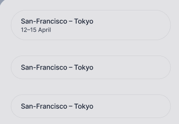
A row has no card, border or divider. The switch is leaf when on. The slider has no thumb. The field is a capsule with no rim.
That year is not on the head. Try again.
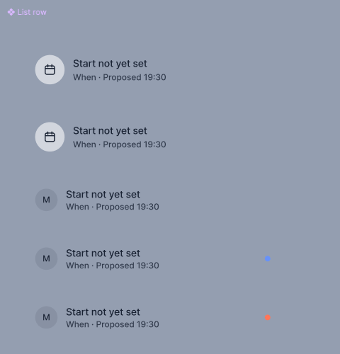
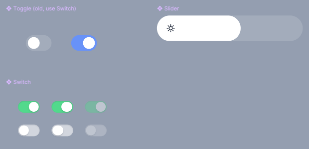
30-buttons/t-02-01, Ask input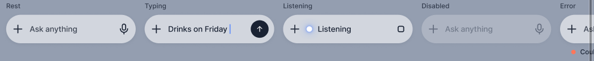
One shell: frosted glass, corner 48, a title with a caption, rows with hairlines, two buttons at most. One row is lit at a time. A state changes the mark, the words and the chips, never the shape.
Checking the codes · step 3 of 5
Reading the photograph
Step 2 of 5 · about 20 seconds
Could not read the head stamp
The photograph is too dark. Nothing was sent.
Nothing sent yet
Take a photograph and it lands here.
Sent to the senior inspector
Ross · 14:02 · six checks
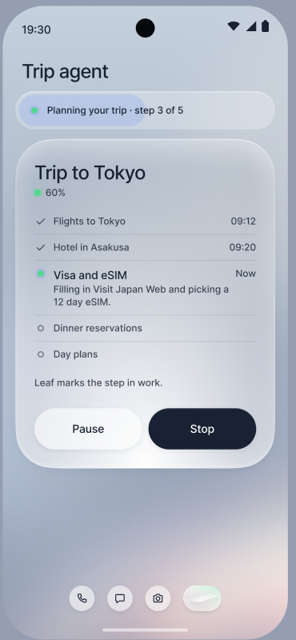
37-generative-ui/t-10-01, rows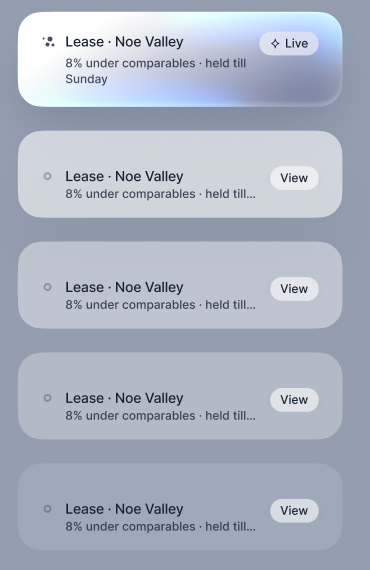
37-generative-ui/t-11-01 and t-12-01, card states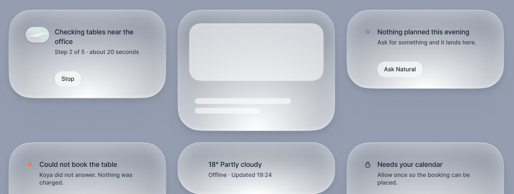
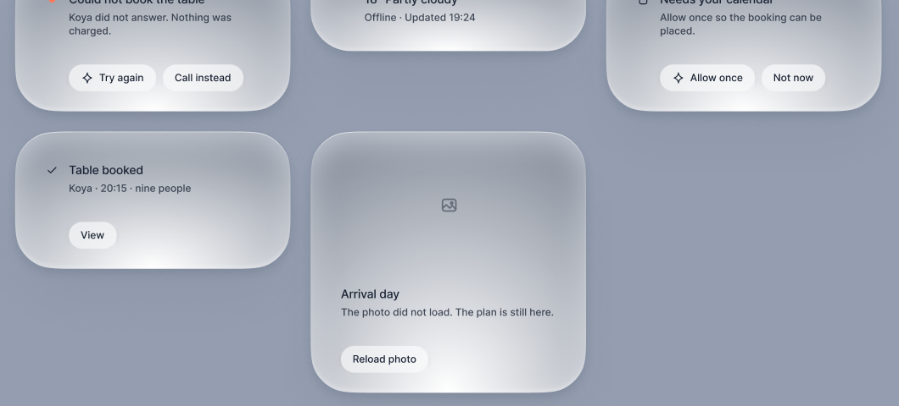
One sheet. Up to four blocks: the facts, the question, the choice, what happens next. One Ink action and a close disc. Sending is a hold.
One row is a violation. Two need a look on site.
Goes to the senior inspector with the photograph and your answers.
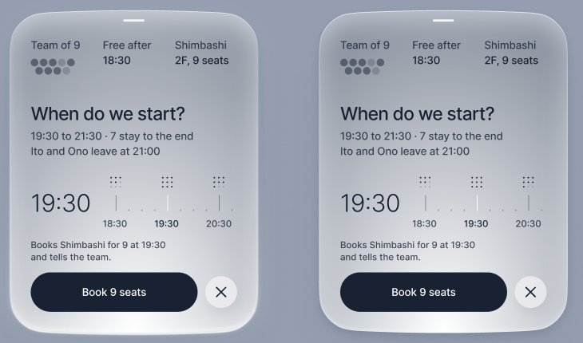
The pages' own parts, with their real class names, wearing the kit. Nothing below was rewritten. Switch the look at the top to compare.
Remove the lower tier of bushes
Ladder fuel within 30 ft.
Violation.Inside the 30 ft reach at 20 ft.
Sample citation, for this preview only
“Ladder fuels shall be removed within 30 feet of the structure.”
Sample wording: ladder fuels shall be removed within 30 feet of the structure.
The hedge sits under the canopy, about 20 feet from the wall.
Is the paint on the part that senses heat?